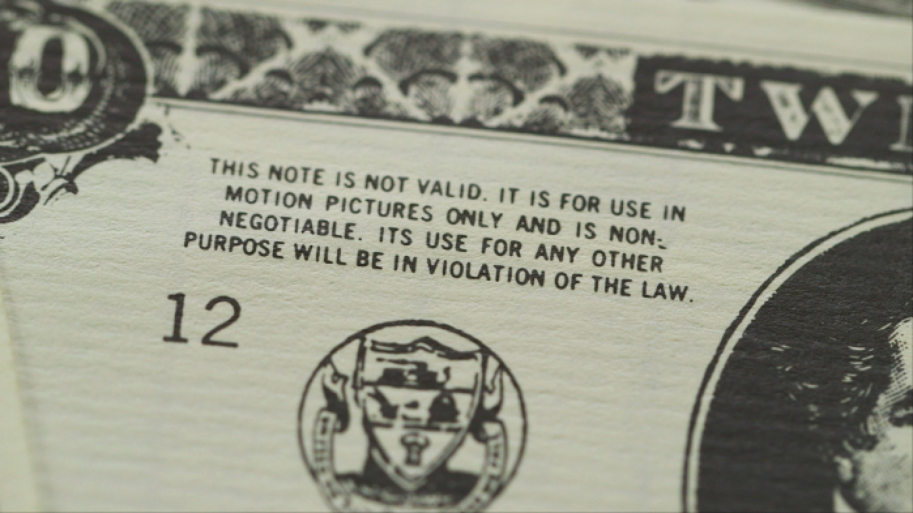

What Are You Looking At? High-Def Hell Breaks Loose in Hollywood
By Maria |
June 22, 2015
The human eye needs to see images projected at 18 to 26 frames per second in order to register film or video as continuous motion. That’s our built-in refresh rate—below that, the illusion of motion breaks back into a series of individual images. Above it, things begin to look a little too real.
Digital cameras can now record at 48 to 120 frames per second, and higher. Even at 48 fps, viewers found that The Hobbit: An Unexpected Journey (2012) looked “uncompromisingly real—so much so that it looked fake ... the make-up, the sets, the costumes,” reviewer Peter Scietta noted. “Hobbiton and Middle Earth didn’t feel like a different universe, it felt like a special effect, a film set with actors in costumes.” His view was widely shared. Alexander D’Aloia wrote, “What 48fps has done is make a prop look like a prop. For example, Gandalf’s (Ian McKellen) staff resembles a hunk of brown plastic, and not a length of wood.” At 120Hz, your high-definition TV is repeating each frame of Fury Road five times every 24th of a second; as if that weren’t enough, the new 4K television standard puts over eight million pixels on the screen, four times that of HDTV.
At the center of this turmoil is the property master, whose job it is to create a sense of unimpeachable authority in an artificial world. If prop masters (together with designers and art directors) do their job perfectly, their work will remain as invisible to the viewer as it is crucial to the illusion of reality on the screen. High definition has made that fastidious work even more exacting.
But prop masters were grappling with disruptive new technologies as early as the advent of talking pictures and on through the evolution of cinema. In high def or low, one false move can ruin the whole show, Ralph Hernandez, the genial owner of the legendary Earl Hays Press prop house, told me. His firm has provided prop money, passports, diplomas, credit cards, marriage certificates, newspapers, medical forms, autopsy reports, candy packaging—all the printed props under the sun—for more than half a century.
Hernandez, now in his 80s, is still steamed over a prop man's error he noticed 30 years ago. It was in a performance he saw of the musical Annie.
“This is supposed to be 1933, and that’s the year I was born, so I’m very particular about that,” he said. “This guy comes running onstage ... ‘Mr. President, there’s a telegram from the State Department!’ And he opens it up like this, and it's a modern-day telegram, with that big bar across the top? And I’m sitting there and I go: Oh, shit.” The next day, Hernandez summoned the prop man. “He came, and he bought a dozen telegram blanks from the period. So nobody else in that audience would have to go through what I went through.”
VIDEO IS HERE
I still remember how disoriented I was by the first HDTV images I saw—close-ups of football players that took an alarmingly intimate inventory of every pore, hair, and bead of sweat on their massive faces and necks. IRL we don’t get that close and can’t focus that minutely. In that way, old-fashioned analog film, with its relatively soft-edged, slightly blurred images, mimics vision more realistically than the most technically accurate high-definition projections, corresponding intelligibly and comfortingly, if not quite “exactly,” to the way we see in ordinary life.
“We used to say, if it’s not bigger than a two-inch circle, you’re not going to see it on film,” Hollywood prop master David Marais told me in his sunny South African lilt. “Now, with high def, it’s down to an eighth of an inch. It’s got to look real. And the dust on the floor, now they’re going to see the dust on the floor underneath the couch ... It has definitely changed the way I look at things, because now you look at the dirt around the doorknob, you look at chips on the paint, all those sorts of things, and you think, ‘Ah, I gotta fix that.’”
How long ago was it, I asked Marais, that you could still say a two-inch circle, it won't matter?
“Mmm ... five years.”
Marais’s easy laugh, floppy blond hair, and moustache give him an agreeably 70’s air. He works mostly on commercials, because the shoots are brief and local. His job is to make things look the way the director wants them to look, which on one occasion involved spending days slicing thousands of tiny rubber hairs off a set of Mercedes tires.
It turns out all tires come with these little hairs, “vent spews,” which ensure that all the air is expelled when the tire is formed. But new, perfect tires—the most perfect tires you could buy in real life—wouldn’t be ideal tires in HD, because they wouldn’t match what we think we see when we look at tires. What we think we see would have a completely sleek, smooth surface, even from very, very close up. Hence the hair-slicing.
At the same time, commercials have schooled us to expect a perfection that HD can comically disrupt. Marais told me about a recent job in which he was asked to make fruits and vegetables dance.
“Tomatoes, carrots, uh, onions, and strawberries,” he said, a little sheepishly. “And we were shooting it in Palm Springs, so it was like, How do I make sure that the carrot leaves stay fresh? Because they're going to wilt! And so do we want big carrots—”
Wait, literal carrots? I ask.
Literal carrots. They might do them in post, but they want them to be literal carrots so they can see how the shadow falls on them, because if they’re gonna do them in CGI [computer-generated imagery], then they want to know how the carrot reacts, and how the leaves react and dance.
The real carrot has to model for the CG carrot.
Yes. So they shot that over and over and over again, and they wanted a big carrot, but nobody sells big carrots with leaves on. So I had to buy smaller carrots with the leaves and bigger carrots, and drill out the bigger carrots and cut off the leaves of the smaller carrots and stuff them into the bigger carrots, and they would only last for an hour.
I had to source a place out there that had fresh carrots, and I could buy big carrots here, and what is the best way to core it, and drill a hole that size in the carrot—put ice down in the carrot, put water in the carrot, put the leaves down in the water (laughs)—it’s so stupid. I will never use that bit of information in my life, ever again.
So once you have the carrot, how do you make it dance?
I made a rod, and then I welded a screw onto it so I could screw it into the carrot, so that if I lift it up and down to make it dance, it would stay vertical.
So the carrot is basically pogoing.
Yes.
We have to be persuaded—of what, exactly, it’s hard to say. But the illusion of dancing vegetables will never work if they are even slightly wilted or misshapen. They must be casually believable, instinctively credible carrots, like those familiar to us from “real life” at 24 frames per second, but also gorgeous, perfect carrots, or their performance will just seem … wrong.
“We did all sorts of experiments, like putting little steel rods into the carrot leaves so that they wouldn’t fall over,” Marais said. “They didn’t move like a real carrot, so that was nixed.”
“So you’re in your house,” I suggested, “in your sitting room or whatever, looking at a box, and on the box is a screen, showing you a picture of vegetables that have been made to pogo with rods. In order to make you believe … what?”
“I don’t know,” he said, shaking his head. “That vegetables dance around?”
What 48 frames per second has done is make a prop look like a prop. Gandalf's staff resembles a hunk of brown plastic.
Film props are the direct descendants of stage props. Among the earliest known Elizabethan stage props was the Hell Mouth, into which the damned might thrillingly be tossed—this according to Dutton Cook, a 19th-century historian of the theater who also reproduced a “genuine inventory of properties, &c., belonging to the Theatre Royal in Crow Street, Dublin, 1776”:
Juliet's bier.
Juliet's balcony.
A small map for Lear.
Tomb for the Grecian Daughter.
One Shepherd's hat.
Four small paper tarts.
None of these objects is so small that you wouldn’t be able to determine what you were looking at from the balcony of a London theater. But with the advent of film and television came new ways of showing, and seeing. The new technologies enabled us to zoom in, or out; look right in someone’s eye at the moment of truth, focus clearly on a small, important object—a stolen jewel, say, or a vial of poison.
On film, small props could be made almost to glow with meaning, as in On The Waterfront when Marlon Brando famously violates the white glove of Eva Marie Saint by drawing it onto his own hand. The sensitive, tender, and yet slightly menacing passion conveyed by that strange little gesture (it was improvised!) would have been lost to the viewer in the balcony of a play. In a movie theater, even from the back row, anyone could watch the two lovers’ faces and understand the glove’s implications.
Source: SOMETHING
In time, the camera’s range of vision deepened and widened to show us sights that had been entirely unseeable without it. Fetuses developing in the womb, the Earth from afar, the ground on Mars, microscopic creatures, freakish beasts darting through the blackness at the floor of the deepest sea. Those former mysteries, once seen, could then be reimagined through other new technologies to create “special effects” that grew more and more sophisticated. Frankly unreal things emerged, things that came from the mind’s eye alone—but a mind’s eye that had been newly educated, newly expanded. Today we have richly detailed moving images of angels and monsters, fantastic worlds, visions of wizards, vampires, dragons, alien landscapes.
In Cook’s phrase, the property master's job is “to obtain acceptance for forgeries,” to give a sensation of reality within an illusion. That’s a bit different from mere fidelity to empirical reality. It’s a facsimile of reality plus a dimension of persuasion, reshaped over time by the progress of technology.
Whether at 24 frames per second or 240, property masters must also reckon with trademark law, where “likelihood of confusion” is a central term of art. Which is just weird when you consider that the principal aim of their craft is just that.
Trademarks require special care. For example, Earl Hays Press will rent or sell you pink soda-can labels for “Teb” that look very, very like Tab labels. The average moviegoer’s conditioning to that pink label is such that he or she can “read” the Teb label in a film and understand, instantly and unconsciously: diet soda. Coca-Cola Co. needn't worry that its real brand is being co-opted, because it’s Teb, not Tab.
Prop master Harrison Paul, whose job often requires him to get permission to depict a trademarked product from the rights holder, told me some clients are so nervous about being sued for trademark infringement they’ll pay for every single prop on a set to be cleared. He once spent days tracking down the manufacturer of a 1960s Japanese clock to obtain permission to show one corner of it in a commercial. David Marais told the same story. “Quite often they will have a team of three or four on a commercial clearing everything from the chairs to the coffee cups to the laptop. Everything,” he said.
To avoid the time-consuming and expensive business of obtaining formal clearances, prop masters often resort to "greeking"—using unreadable dummy text to obscure identifying marks on products. Marais sells silver film stickers designed to look like real auto marques, which fit neatly over the tops of the actual ones and obscure the trademarked devices beneath. It's a good side business, he said.
“Five years ago we used to just put tape over [a marque], or maybe a silver stripe, something just to hide it,” he said. “But now this has become the standard.”
Here, too, the slightest disturbance in an illusion, like the plastic look of a magic wand, can spoil the whole story, the painstaking work of hundreds upon hundreds of talented people. The wrong shoes on a period character, a product or a car or a wristwatch out of place, will jar you right out of the fictive dream and prompt even the most willing viewer to reject the forgery. And disbelief, once it has crashed to earth, is almost impossible to re-suspend.
* * *
Try re-suspending it, for example, if the money in a film looks fake. Or try dealing with the feds if it looks too real.
The sudden revelation of a fortune in cash, like the proceeds of a bank heist or a briefcase full of ransom money, is one of the most loved and most necessary movie illusions of all—and among the riskiest and most difficult to achieve. As a viewer, you absolutely must believe it's real money in that briefcase, or in a split second you’re on the wrong track: Oh my God, that money's fake and the kidnappers will know it!
The climax of Lethal Weapon 2 (1989) finds criminal mastermind Arjen Rudd, played by the agreeably menacing Joss Ackland, about to get away with a big shipping container stuffed with (a) hundreds of millions of dollars in freshly laundered drug money and (b) a Mercedes. Upon discovering the goods, Mel Gibson and Danny Glover, as detectives Riggs and Murtaugh, are surprised by the bad guys—who, despite having spent the last hour blithely mowing people down with machine guns, are content to lock our heroes in with the loot in one of the laziest murder attempts in film history.
The music swells as the container is hoisted high above the getaway ship on a crane, whereupon the Mercedes bursts out of it in mid-air, exploding into flames and plunging into the sea, followed by massive confetti clouds of fluttering cash, an incalculable sum wafting gently onto the water’s surface and pooling like the froth on a latte. Not real money. Just a ton of prop money.

Source: SOMETHING
According to Hernandez of Earl Hays Press, the producers of Lethal Weapon 2 basically bought up all the prop money in Los Angeles for this striking scene (and many that came after: money is still fluttering to earth long after Gibson and Glover rappel their way down off the crane and commence shootin’). Hernandez warned the people charged with sourcing the loot that without obtaining permission in advance from the federal government they could get into trouble. Prop money had a way of getting passed around off set, he told me. Sometimes people even tried to spend it.
Prop money isn’t intended to bring down the government, but it’s still fake money, and the same is true of prop passports and driver’s licenses. They're counterfeit counterfeits, you might say. So their makers must satisfy audiences, beyond the shadow of a doubt, without breaking strict anti-counterfeiting laws. In the case of prop money, this involves getting special clearances from the Secret Service, whose original mandate was to protect the currency against counterfeits, a responsibility it has to this day.
“Those bales were a mishmash of our money, Hand Prop Room’s money, [prop rental company] ISS’s money, anywhere they could buy it,” Hernandez said of the climax of Lethal Weapon 2. “I said, ‘You watch out!’ ... But the producers of that show kind of scoffed at us. Not mentioning any names, but anyway, these hotshots ... I heard later from some of my buddies, when the Secret Service walked into their offices they almost crapped their pants. One guy tried to hide in the closet, you know. They were running around.”
He had found himself in similar situations. In 1965, Earl Hays Press produced some dangerously accurate prop money for The Cincinnati Kid. In the picture, set in the early 30’s. Hernandez told me: “The whole thing is a stud poker game, so for an hour and a half money is going to be flowing all over that table.
So we did artwork on the money. The law says you cannot use any part of a real bill. So we did everything phony, the numbers, everything was original art, all the way through. But it looked amazingly good, even though nothing was from an original bill. (It really does, too) And we submitted to the Secret Service, you know, to the local guy over here.
The Secret Service sent Earl Hays Press a letter authorizing the use of the prop money, which was duly printed and sent out to the film crew. “And they went back to New Orleans, and it became a headache right from the beginning," he said.
The film crew were misusing it! You know, motion picture crews, they’re scroungers. They’re scroungers! Everything sticks to their hands. And they were going into the bars and the clubs of New Orleans at night, and you know, like, they would take a hundred-dollar bill and fold it in half—it was damn good-lookin’ money—and they'd throw it on the floor. And they’d be all drinking like this, and watching the waitresses who would come by, step on ’em, drop down, and pick it up.
His eyes lit up. “Oh, man, I’m telling you!” Hernandez recalled, his eyes lighting up. “All of a sudden the Secret Service was going out of their kanoggins with all this money showing up in the banks and everything else ... They made us have a huge bonfire in the back, and they even picked up the ashes, just to show the head office that they had gotten the money burned.”
* * *
The surreality of the prop master’s job brings to mind a passage from David Foster Wallace’s “E Unibus Pluram,” about the surreal quality of television itself: “Chemical reactions throwing off phosphenes in grids of dots ... Good Lord and the dots are coming out of our furniture, all we’re really spying on is our own furniture, and our very own chairs and lamps and bookspines sit visible but unseen at our gaze’s frame as we contemplate ‘Korea’ or are taken ‘live to Amman, Jordan.’”
Our culture’s conversation with itself takes place in mass media. We can argue about when this became evident. With Notes on Camp? With The Black Boy Looks at the White Boy? With The Simpsons, The Sopranos, The Wire? Whenever it started, the conventions of that conversation now affect not only what we think but what we can think.
Don DeLillo’s 1985 novel White Noise nailed this uneasy aspect of U.S. life in a passage about a visit to a popular tourist attraction, “the most photographed barn in America.” For that barn, we may read American culture and communities; for the throngs photographing the barn, the media.
“We’re not here to capture an image, we’re here to maintain one. Every photograph reinforces the aura. Can you feel it, Jack? An accumulation of nameless energies.” ...
“What was the barn like before it was photographed?” he said. “What did it look like, how was it different from other barns? We can’t answer these questions because we’ve read the signs, seen the people snapping the pictures. We can’t get outside the aura. We’re part of the aura.”
The new technologies that transmit our narratives are the most seductive yet. The dangers are obvious. You can become lost in a world of perfect simulacra. People disappear every day into the imaginary worlds of games and social media, crash their real lives over a Facebook crush, even die of exhaustion after three days’ gaming in a Taiwanese Internet cafe. For those of us who live and work online, which is more real, the screen life or the physical one?
Meanwhile, those whose work is to focus on the most minute minutiae to create that convincing simulacrum of reality, of ever more persuasive illusions, live in a world that seems less and less real. Where, laughing incredulously, they may find themselves drilling a hole in a carrot.